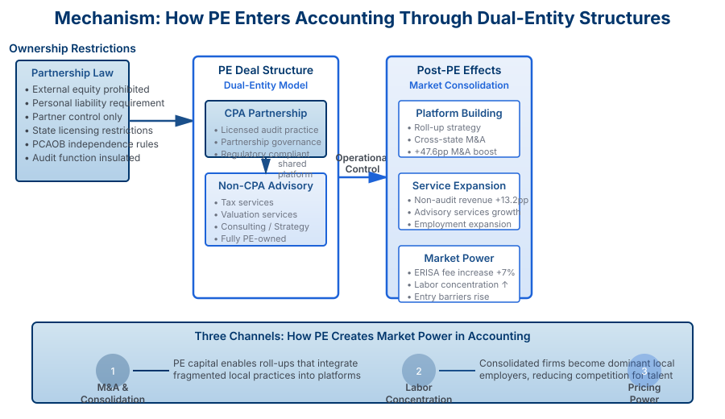

Overview
Private equity has expanded rapidly into professional services, raising questions about competition, labor markets, and professional independence in traditionally licensed, reputation-based, and partnership-controlled sectors. This paper studies these issues using accounting-industry data from 1999–2024 that links more than 3,000 PE transactions to firm organization, labor-market outcomes, and audit pricing. PE investment increases sharply after 2020 and extends to both CPA-licensed audit firms and non-CPA advisory practices, with activity concentrated in large mid-tier firms. After PE entry, firms grow faster: non-audit revenues rise, employment expands, and cross-state mergers and acquisitions accelerate, consistent with platform building and consolidation. These organizational changes have market-level implications. PE investment increases labor market concentration in key accounting occupations and raises audit fees in ERISA engagements, a highly standardized setting where regulation fixes scope and effort, isolating price effects consistent with increased market power.
Key Research Questions
- Market Transformation: How has private equity reshaped the structure and ownership of the accounting profession?
- Service Quality: What happens to audit quality and professional service standards when accounting firms are acquired by private equity?
- Client Impact: How do PE-backed accounting firms differ in their treatment of clients, pricing strategies, and service offerings?
- Professional Independence: Does PE ownership affect the professional independence and ethical standards traditionally associated with accounting firms?
- Regulatory Implications: What are the implications for financial reporting quality and regulatory oversight when professional services become financialized?
Research Context
The accounting profession has historically been organized around partnerships and professional norms emphasizing independence and quality. State-level ownership restrictions and PCAOB regulations establish boundary conditions for financial capital in accounting, with the attest function insulated from direct external control. However, adjacent segments such as tax, valuation, and advisory services provide channels through which capital can reshape the broader organization of expertise. PE investment in accounting has accelerated sharply since 2020, coinciding with rising technology and compliance costs, partner retirements, and liquidity pressures among mid-sized firms. This expansion occurs through both direct acquisitions of CPA-licensed practices and through acquisitions of non-CPA affiliates providing tax, valuation, and advisory services—structures that allow PE investors to consolidate operational control while navigating ownership restrictions. These developments raise fundamental questions about whether PE-induced consolidation and operational restructuring reshape competition and professional independence in markets traditionally organized around reputation and regulation.
Key Results
The paper presents comprehensive evidence of PE's rapid expansion in accounting and its measurable effects on market structure, competition, and pricing. The analysis documents over 3,600 PE transactions between 1999 and 2024, with dramatic acceleration after 2020. Using event-study methods, the research shows that PE-backed firms exhibit significantly higher growth rates in non-audit revenues, larger employment expansions, and substantially increased likelihood of pursuing acquisitions. Most tellingly, in the highly standardized market for ERISA plan audits—where regulation constrains both scope and effort—PE investment raises professional fees by approximately 7%, evidence consistent with increased market power rather than enhanced service complexity.

Figure 1. PE transactions accelerate sharply after 2020, reaching over 300 deals in recent years. Post-PE firms exhibit sustained growth in non-audit services, significantly elevated M&A probabilities, and measurable fee increases in standardized audit segments.
Mechanism: Circumventing Ownership Restrictions
A central question in the paper is how PE capital penetrates a sector explicitly regulated to prevent external ownership and control. The answer lies in deal-structuring innovation. PE sponsors navigate state partnership law and PCAOB regulations through dual-entity structures that preserve the licensed audit partnership while consolidating operational control through a separately owned non-CPA advisory platform. This structure—combining a regulated CPA partnership with a financialized non-CPA tax, valuation, and advisory affiliate—permits PE investors to control platform strategy, capital allocation, and acquisitions without directly owning the audit function. Through this mechanism, PE can orchestrate roll-ups, standardize operations, implement cost-reduction strategies, and pursue consolidation, all while formally respecting audit-firm licensing boundaries. The result is a hybrid organizational form that marries financial engineering with professional expertise, creating scale and operational efficiency that the traditional partnership model struggles to achieve.

Figure 2. Dual-entity structure: PE investments create a holding company controlling a non-CPA advisory platform while maintaining partnership governance of the licensed audit firm. This structure enables consolidation, service expansion, and pricing power while navigating ownership restrictions.
Significance
This research contributes to understanding how external capital reshapes professional services built on licensing, personal liability, and reputational capital. The paper extends a growing literature on the real effects of private equity by examining a sector traditionally viewed as insulated from financial ownership. The results show that PE can penetrate professional services through structural innovation and deal-design strategies, even in the presence of formal regulatory restrictions on direct ownership. The findings have important implications for regulators, professional standard-setters, and policymakers concerned with maintaining the quality and independence of accounting services. By linking PE transactions, audit-firm information, and ERISA pricing data, the study provides the first integrated analysis of how external ownership affects input markets, consolidation dynamics, and pricing power in professional services. The research agenda extends beyond auditing to other professional sectors (tax, valuation, advisory) where the potential for market power through consolidation may be even greater.